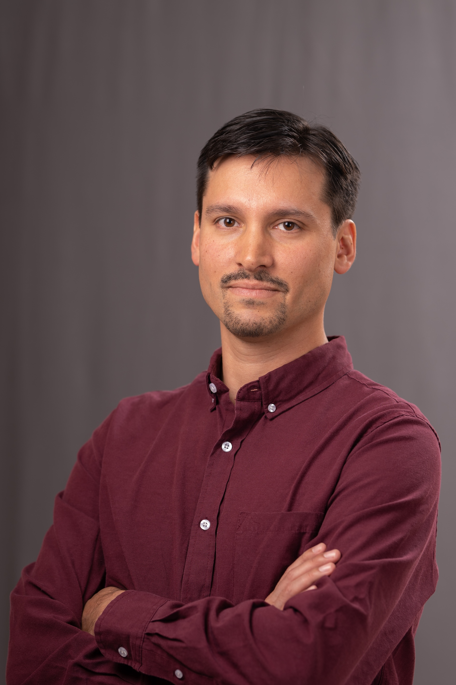

DELOREAN / DELOREAN II code development
Custom orbital-modelling framework for realistic potentials, time-dependent components, and satellite systems, coupled to emcee for Bayesian parameter exploration and orbit fitting. Results page.
Staff Researcher · Centro Espacial Nacional, Chile
Turning observations into real dynamical histories!
I use real object observations with orbital modelling techniques and N-body/hydrodynamical simulations to reconstruct the dynamical evolution of galaxies, stellar systems, and space objects.

I am a Staff Researcher at the Centro Espacial Nacional in Chile. After my undegraduate and master at Univesidad de Concepción, I moved to Germany where I received my doctorate from the LMU Munich, carrying out my research at the Max Planck Institute for Extraterrestrial Physics (MPE), followed by a postdoctoral position at the Munich Observatory and MPE (PGN). Later, I moved back to Chile, where I worked in postdoctoral and research positions at the Pontificia Universidad Católica de Chile, Universidad de Tarapacá (UTA), and Universidad de La Serena (ULS).
Custom orbital-modelling framework for realistic potentials, time-dependent components, and satellite systems, coupled to emcee for Bayesian parameter exploration and orbit fitting. Results page.
Made-to-measure dynamical modelling for barred galaxies, especially M31’s bar, box/peanut bulge, mass structure, and dark matter. M31/M2M page.
Hydrodynamical and N-body model construction with established open/community codes. These are modelling tools I use; I do not claim authorship of the original codes.
Figures and simulation videos in a compact carousel. It advances automatically and can be controlled with arrows.
Add real files in media/ and edit carousel-data.js.
This list is generated from ADS by GitHub Actions and kept as a static latest-papers.json file.
Open to collaborations on orbital modelling, barred galaxies, dwarf galaxies, gas-star offsets, tidal features, simulations, and dynamical inference from observations.